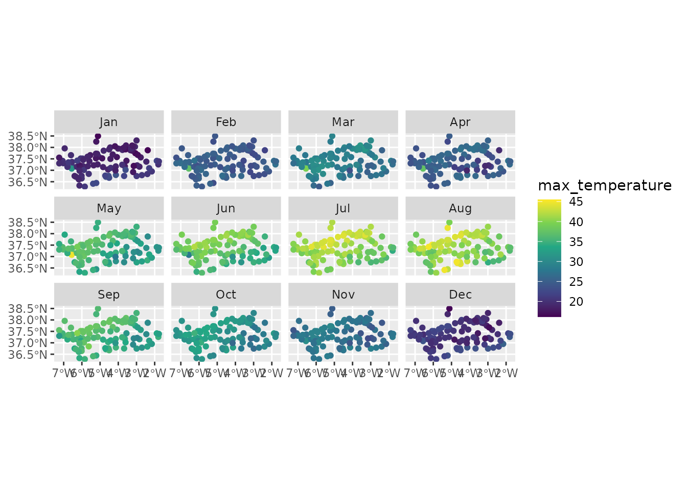
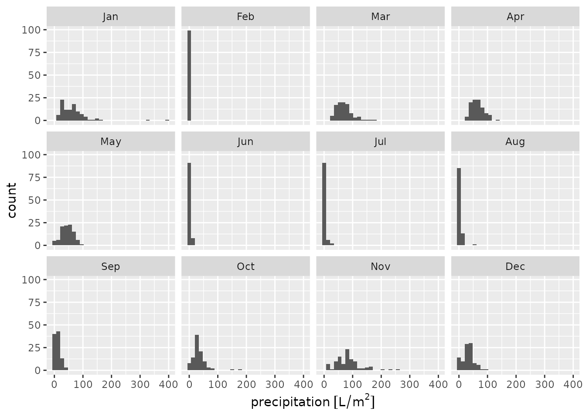

library(meteospain)
library(dplyr)
#>
#> Attaching package: 'dplyr'
#> The following objects are masked from 'package:stats':
#>
#> filter, lag
#> The following objects are masked from 'package:base':
#>
#> intersect, setdiff, setequal, union
library(ggplot2)
library(ggforce)
library(units)
#> udunits database from /usr/share/xml/udunits/udunits2.xml
library(sf)
#> Linking to GEOS 3.12.1, GDAL 3.8.4, PROJ 9.4.0; sf_use_s2() is TRUERed de Información Agroclimática de Andalucía (RIA) service
RIA service offers the data of the andalucian automatic meteorological stations network. This network is supported and assessed by the Junta de Andalucía and the data should be trustworthy.
RIA options
Temporal resolution
RIA API offers data at different temporal resolutions:
- “daily”, returning the daily aggregated measures for all or selected stations.
- “monthly”, returning the monthly aggregated measures for all or selected stations.
In both, “daily” and “monthly”, a start_date (and
optionally an end_date) arguments must be provided,
indicating the period from which retrieve the data.
Stations
RIA API needs station codes and province codes to retrieve the data.
Sadly, RIA doesn’t provide unique station codes, and the uniqueness
comes with the province id and station code together. So, to narrow the
data retrieving to the desired stations they must be provided as a
character vector of “province_id-station_code” values (i.e. “14-2”) for
the stations argument. Calling
get_stations_info_from('ria', ria_options) will show the
station correct codes in the station_id column to take as
reference.
Examples
# default, daily for yesterday
api_options <- ria_options()
api_options
#> $resolution
#> [1] "daily"
#>
#> $start_date
#> [1] "2025-09-30"
#>
#> $end_date
#> [1] "2025-09-30"
#>
#> $stations
#> NULL
# daily, only some stations
api_options <- ria_options(
resolution = 'daily',
stations = c('14-2', '4-2')
)
api_options
#> $resolution
#> [1] "daily"
#>
#> $start_date
#> [1] "2025-09-30"
#>
#> $end_date
#> [1] "2025-09-30"
#>
#> $stations
#> [1] "14-2" "4-2"
# monthly, some stations
api_options <- ria_options(
resolution = 'monthly',
start_date = as.Date('2020-04-01'), end_date = as.Date('2020-08-01'),
stations = c('14-2', '4-2')
)
api_options
#> $resolution
#> [1] "monthly"
#>
#> $start_date
#> [1] "2020-04-01"
#>
#> $end_date
#> [1] "2020-08-01"
#>
#> $stations
#> [1] "14-2" "4-2"RIA stations info
Accessing station metadata for RIA is simple:
get_stations_info_from('ria', api_options)
#> Simple feature collection with 123 features and 7 fields
#> Geometry type: POINT
#> Dimension: XY
#> Bounding box: xmin: -7.248333 ymin: 36.285 xmax: -1.770278 ymax: 38.49611
#> Geodetic CRS: WGS 84
#> # A tibble: 123 × 8
#> service station_id station_name station_province province_id altitude
#> * <chr> <chr> <chr> <chr> <int> [m]
#> 1 ria 14-2 Adamuz Córdoba 14 145
#> 2 ria 4-10 Adra Almería 4 2
#> 3 ria 23-6 Alcaudete Jaén 23 640
#> 4 ria 4-2 Almería Almería 4 5
#> 5 ria 21-10 Almonte Huelva 21 13
#> 6 ria 21-103 Almonte bajo plásti… Huelva 21 38
#> 7 ria 21-104 Almonte bajo plásti… Huelva 21 23
#> 8 ria 18-11 Almuñecar Granada 18 29
#> 9 ria 18-9 Almuñecar Granada 18 49
#> 10 ria 29-3 Antequera Málaga 29 457
#> # ℹ 113 more rows
#> # ℹ 2 more variables: under_plastic <lgl>, geometry <POINT [°]>RIA data
api_options <- ria_options(
resolution = 'monthly',
start_date = as.Date('2020-01-01'),
end_date = as.Date('2020-12-31')
)
andalucia_2020 <- get_meteo_from('ria', options = api_options)
#> Some stations didn't return data for some dates:
#> 11-3
#> 11-8
#> 11-9
#> 14-3
#> 18-4
#> 18-9
#> 21-1
#> 21-104
#> 21-106
#> 21-107
#> 21-12
#> 23-10
#> 23-13
#> 23-9
#> 29-3
#> 29-5
#> 4-3
#> 4-9
#> 41-1
#> 41-14
#> 41-4
#> 41-6
#> ℹ Data provided by Red de Información Agroclimática de Andalucía (RIA)
#> https://www.juntadeandalucia.es/agriculturaypesca/ifapa/riaweb/web/
andalucia_2020
#> Simple feature collection with 1209 features and 19 fields
#> Geometry type: POINT
#> Dimension: XY
#> Bounding box: xmin: -7.248333 ymin: 36.285 xmax: -1.770278 ymax: 38.49611
#> Geodetic CRS: WGS 84
#> First 10 features:
#> timestamp service station_id station_name station_province altitude
#> 1 2020-01-01 ria 14-2 Adamuz Córdoba 145 [m]
#> 2 2020-02-01 ria 14-2 Adamuz Córdoba 145 [m]
#> 3 2020-03-01 ria 14-2 Adamuz Córdoba 145 [m]
#> 4 2020-04-01 ria 14-2 Adamuz Córdoba 145 [m]
#> 5 2020-05-01 ria 14-2 Adamuz Córdoba 145 [m]
#> 6 2020-06-01 ria 14-2 Adamuz Córdoba 145 [m]
#> 7 2020-07-01 ria 14-2 Adamuz Córdoba 145 [m]
#> 8 2020-08-01 ria 14-2 Adamuz Córdoba 145 [m]
#> 9 2020-09-01 ria 14-2 Adamuz Córdoba 145 [m]
#> 10 2020-10-01 ria 14-2 Adamuz Córdoba 145 [m]
#> mean_temperature min_temperature max_temperature mean_relative_humidity
#> 1 8.084 [°C] -1.075 [°C] 18.59 [°C] 86.550 [%]
#> 2 12.118 [°C] 1.414 [°C] 25.33 [°C] 82.603 [%]
#> 3 13.362 [°C] 2.343 [°C] 29.61 [°C] 76.503 [%]
#> 4 15.378 [°C] 4.422 [°C] 26.26 [°C] 83.117 [%]
#> 5 21.035 [°C] 9.440 [°C] 36.67 [°C] 65.812 [%]
#> 6 24.067 [°C] 11.320 [°C] 40.67 [°C] 47.662 [%]
#> 7 29.895 [°C] 14.330 [°C] 43.21 [°C] 37.810 [%]
#> 8 27.107 [°C] 11.310 [°C] 43.69 [°C] 41.089 [%]
#> 9 22.876 [°C] 8.720 [°C] 37.68 [°C] 56.056 [%]
#> 10 15.796 [°C] 4.093 [°C] 33.13 [°C] 69.394 [%]
#> min_relative_humidity max_relative_humidity precipitation
#> 1 32.860 [%] 100.0 [%] 44.2 [L/m^2]
#> 2 16.250 [%] 100.0 [%] 3.2 [L/m^2]
#> 3 23.710 [%] 100.0 [%] 57.8 [L/m^2]
#> 4 32.710 [%] 100.0 [%] 73.8 [L/m^2]
#> 5 16.570 [%] 100.0 [%] 23.6 [L/m^2]
#> 6 11.600 [%] 100.0 [%] 1.4 [L/m^2]
#> 7 8.110 [%] 81.1 [%] 1.2 [L/m^2]
#> 8 3.755 [%] 100.0 [%] 10.6 [L/m^2]
#> 9 14.220 [%] 100.0 [%] 27.0 [L/m^2]
#> 10 16.180 [%] 100.0 [%] 35.8 [L/m^2]
#> mean_wind_direction max_wind_direction mean_wind_speed max_wind_speed
#> 1 56.916 [°] NA [°] 0.451 [m/s] 7.010 [m/s]
#> 2 113.220 [°] NA [°] 0.414 [m/s] 5.664 [m/s]
#> 3 219.480 [°] NA [°] 0.721 [m/s] 8.820 [m/s]
#> 4 211.290 [°] NA [°] 0.504 [m/s] 7.140 [m/s]
#> 5 171.527 [°] NA [°] 0.505 [m/s] 6.213 [m/s]
#> 6 226.806 [°] NA [°] 0.852 [m/s] 7.950 [m/s]
#> 7 223.775 [°] NA [°] 0.510 [m/s] 5.684 [m/s]
#> 8 228.480 [°] NA [°] 0.452 [m/s] 5.410 [m/s]
#> 9 210.046 [°] NA [°] 0.282 [m/s] 7.160 [m/s]
#> 10 170.166 [°] NA [°] 0.328 [m/s] 8.770 [m/s]
#> solar_radiation under_plastic geometry
#> 1 8.108 [MJ/d/m^2] FALSE POINT (-4.445278 37.9975)
#> 2 13.562 [MJ/d/m^2] FALSE POINT (-4.445278 37.9975)
#> 3 15.845 [MJ/d/m^2] FALSE POINT (-4.445278 37.9975)
#> 4 17.620 [MJ/d/m^2] FALSE POINT (-4.445278 37.9975)
#> 5 23.983 [MJ/d/m^2] FALSE POINT (-4.445278 37.9975)
#> 6 28.220 [MJ/d/m^2] FALSE POINT (-4.445278 37.9975)
#> 7 27.251 [MJ/d/m^2] FALSE POINT (-4.445278 37.9975)
#> 8 24.888 [MJ/d/m^2] FALSE POINT (-4.445278 37.9975)
#> 9 18.787 [MJ/d/m^2] FALSE POINT (-4.445278 37.9975)
#> 10 14.771 [MJ/d/m^2] FALSE POINT (-4.445278 37.9975)Visually:
andalucia_2020 |>
units::drop_units() |>
mutate(month = lubridate::month(timestamp, label = TRUE)) |>
ggplot() +
geom_sf(aes(colour = max_temperature)) +
facet_wrap(vars(month), ncol = 4) +
scale_colour_viridis_c()
andalucia_2020 |>
mutate(month = lubridate::month(timestamp, label = TRUE)) |>
ggplot() +
geom_histogram(aes(x = precipitation)) +
facet_wrap(vars(month), ncol = 4)
#> `stat_bin()` using `bins = 30`. Pick better value `binwidth`.
#> Warning: Removed 21 rows containing non-finite outside the scale range
#> (`stat_bin()`).